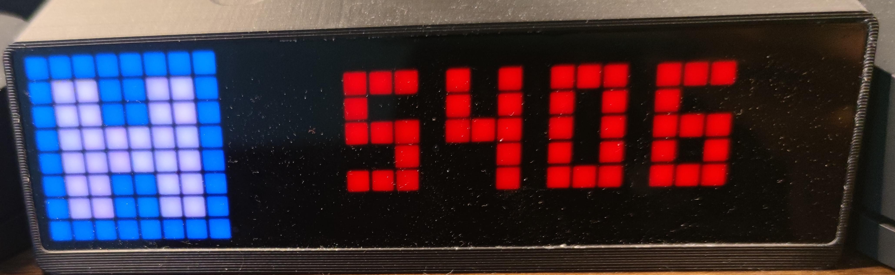

AWTRIX 显示Hexo博客阅读数量
为啥想写这个App
21年的时候做桌面改造的时候，想给自己加一个时钟。看了一圈之后，最终入手了AWTRIX Pro mini。
在AWTRIX App Store中有很多有趣的App，比如GithubFollowers, Bilibili等，并且安装了GithubFollowers，一段时间之后，发现那个数字一直卡在7，尴尴尬尬，内心毫无波澜，于是卸掉。
于是就想看看自己自己博客有多少有效阅读量（每篇博客的阅读量之和）。
如何实现
这是我第一次开发AWTRIX App，我也是极其懵逼。阅读官方文档是最快捷的方法，如果有兴趣可以参考Programming (blueforcer.de)
我的博客是使用Hexo搭建的，阅读计数使用的是LeanCloud。
LeanCloud是提供了API接口，文档参见 存储 REST API 使用指南 - LeanCloud 文档
第一步：获取数据
1 | Sub App_startDownload(jobNr As Int) |
这一步需要注意的是 App.get() 中key的大小写，我在这里栽倒了。
第二步：处理数据
1 | Sub App_evalJobResponse(Resp As JobResponse) |
total_view 是一个全局变量，记得清零。
第三步：显示输出
1 | Sub App_genFrame |
代码详见：https://github.com/chengqing-su/awtrix-hexo-leancloud-counter
如果你需要编译号的Jar包，请自取：https://github.com/chengqing-su/awtrix-hexo-leancloud-counter/releases/download/v1.0.0/HexoLeanCloud.tar.gz
体验
最近几天看着数字不对地变化，感觉自己更加有动力去写博客，去维护博客。
